<div class="back-logg-usertype">
  <div class="cont-c-logg">
    <ion-card class="cont-card-logg">
      <ion-card-header class="ion-text-center">
        
      </ion-card-header>
      <ion-card-content class="cont-controls-logg">
        <ion-list>
            <ion-item class="cont-input-custom">
              <ion-icon class="icons-logg" name="person-outline"></ion-icon>
              <ion-input [(ngModel)]="userData.email_cliente"  type="mail" placeholder="Email..."></ion-input>
            </ion-item>
            <ion-item class="cont-input-custom">
              <ion-icon class="icons-logg" name="lock-closed-outline"></ion-icon>
              <ion-input [(ngModel)]="userData.telefono"  type="text" placeholder="Telefono..."></ion-input>
            </ion-item>
        </ion-list>
        <div class="cont-btn-logg">
          <button block (click)="onLogin()" class="no-ripple" id="btn-login" profile-button end>
            Iniciar Sesión
          </button>
        </div>
      </ion-card-content>
    </ion-card>
  </div>
</div>